Requisição entre Unidades [ Voltar ]Esta tela tem por função permitir a realização de pedidos de transferência entre duas unidades da rede de saúde. O formulário "Requisição entre Unidades" encontra-se dentro do menu "Transferência". 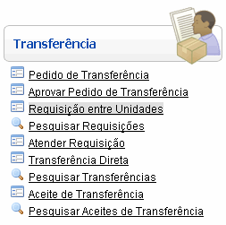
Ao clicar no formulário, o sistema exibirá a seguinte tela: 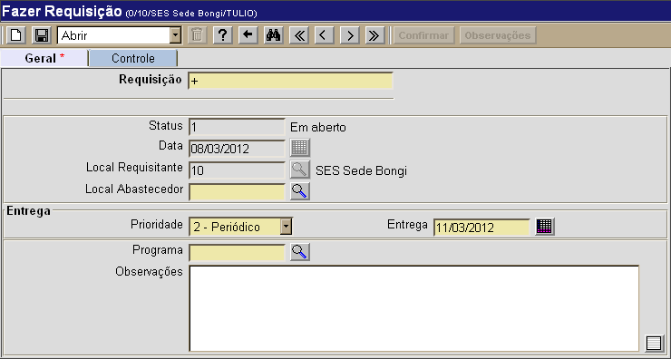
Para criar uma requisição, siga os passos abaixo: 1º
Passo: selecione
o local de origem. Para abrir uma janela
contendo uma lista dos possíveis locais de origem, clique no botão 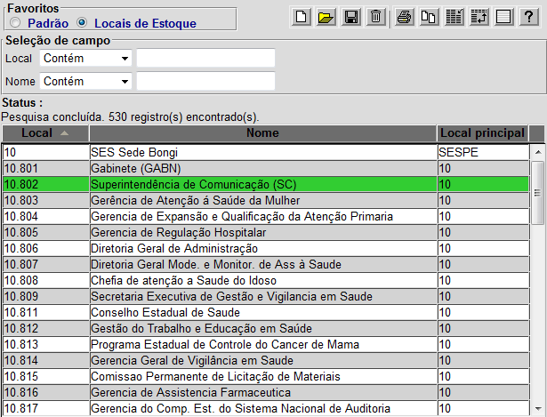
Selecione na lista o local principal, de onde o estoque será adquirido. Ao clicar no local desejado, a janela será fechada automáticamente e o sistema irá preencher o número de tal local no campo adequado: 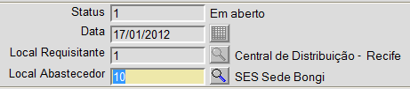
2º Passo: determine o grau de prioridade. Selecione a prioridade de acordo com as características do pedido: Emergencial, Periódico e Eventual. 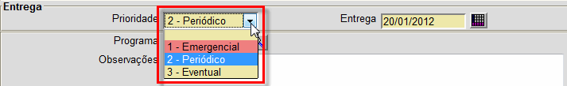
3º Passo: selecione a data de entrega. Neste campo, o usuário pode registrar a data desejada para a entrega. 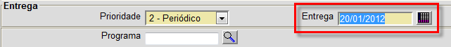
Existem várias maneiras de
preencher este campo. Uma é simplesmente escrevendo a data no formato DD/MM/AAAA
(dia, mês e ano). Outra maneira é clicando no botão
4° Passo: clique
no botão 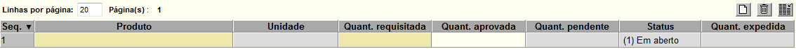
5º Passo: especifique os produtos e
respectivas quantidades para o pedido. Clique no botão Os demais campos da grade exibirão, futuramente, dados processuais do pedido, como a quantidade aprovada, unidade, quantidade pendente, etc. 6º Passo: clique no botão 7º Passo: se todos os dados estiverem
corretos, clique no botão
Se desejar, clique no botão para adicionar observações adicionais sobre esta requisição.
|
 [Procurar]
[Procurar] [Data]
para selecionar em um calendário a data desejada. Uma terceira forma é
seguindo uma das seguintes instruções:
[Data]
para selecionar em um calendário a data desejada. Uma terceira forma é
seguindo uma das seguintes instruções: para realizar o
pedido. Observe que, após a confirmação, o
status do pedido passará de 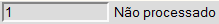
para 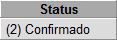.
para realizar o
pedido. Observe que, após a confirmação, o
status do pedido passará de 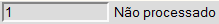
para 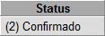.